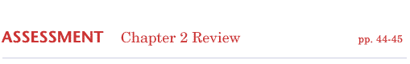
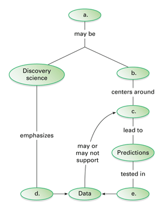
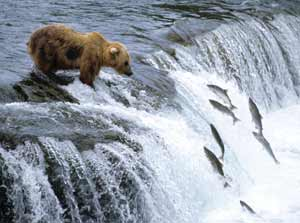
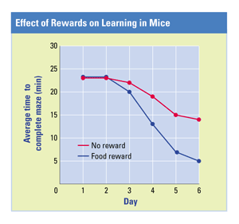

Reviewing Concepts
Multiple Choice
Choose the letter of the best answer.
1. Which of the following is the best definition of science?
a. a body of knowledge gathered through experiments
b. a process of accidental discovery
c. a search for answers to questions about the natural world
d. a method of asking testable questions based on hypotheses
2. Which of the following is an example of qualitative data?
a. The temperature decreased from 20°C to 15°C.
b. The fish swam in a zig-zag motion across the pond.
c. The plant's height is 25 centimeters.
d. The six pairs of robins hatched an average of three chicks per nest.
3. Discovery science is to _____ as hypothesis-based science is to _____.
a. description; explanation
b. data; observations
c. theory; technology
d. inquiry; inference
4. What is a hypothesis?
a. a prediction
b. a collection of data
c. a possible explanation that can be tested
d. a controlled experiment
5. A factor that can change in an experiment is called a(n)
a. control.
b. hypothesis.
c. inference.
d. variable.
6. Which of the following is an example of technology?
a. searching for causes of cancer
b. understanding how muscles contract
c. studying migration routes of birds
d. using artificial skin to treat burns
Short Answer
7. In what ways does discovery science increase understanding about the natural world?
8. What are quantitative data? Give an example of quantitative data.
9. Describe a generalization about nature that you can make based on your own observations.
10. Why is a controlled experiment a useful tool in hypothesis-based science?
11. List characteristics that make a hypothesis scientific.
12. What is the purpose of a scientific model?
13. Describe the benefits scientists gain by sharing information with one another?
14. Explain the differences between science and technology.
Visualizing Concepts
15. Copy the concept map below and complete it.

Applying Concepts
Analyzing Information
16. Analyzing Photographs Study the photograph below. Then answer the questions that follow.
a. Make and list at least four observations about the photo.
b. Write one possible inference.
c. Make a prediction about what will happen next.

17. Analyzing Graphs The graph shows the results of an experiment in which mice learned to run through mazes.

a. State the hypothesis that you think this experiment tested.
b. Identify the experimental variable. List at least two variables that must have been controlled so as not to affect the results.
c. Do the data support the hypothesis? Explain.
Critical Thinking
18. Problem Solving Suppose you observe your neighbor's dog barking at various times of the day and night. What other observations would help you hypothesize why the dog barks when it does?
19. Developing Hypotheses Based on the results of the snake mimicry case study, suggest another hypothesis researchers might investigate further.
20. Evaluating Promotional Claims Describe the strategies you would use to judge whether an advertisement for a diet supplement was reliable.
21. What's Wrong With These Statements?
Briefly explain why each statement is inaccurate or misleading.
a. An inference is the answer to a scientific question.
b. An experiment that shows a hypothesis to be false is wasted effort.
c. Discovery science is not as scientific as hypothesis-based science.
d. New evidence that does not fit an existing, widely accepted theory can be ignored.
Performance Assessment
Design an Experiment Plan an investigation to determine the direction in which plants grow in the dark. Write a reasonable hypothesis. Use the hypothesis to make a prediction that could be tested. Describe how you would set up the experiment. Identify the variable you want to test, and tell how you would control other variables.